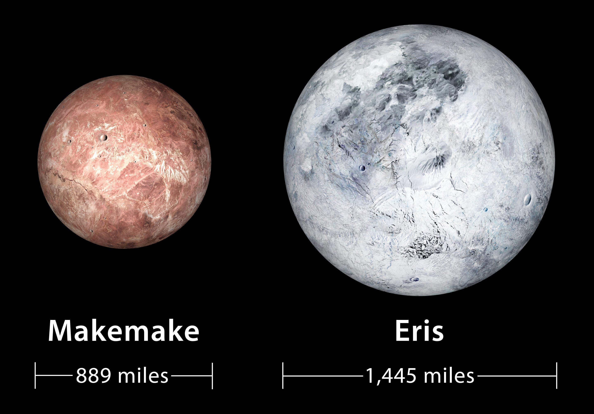
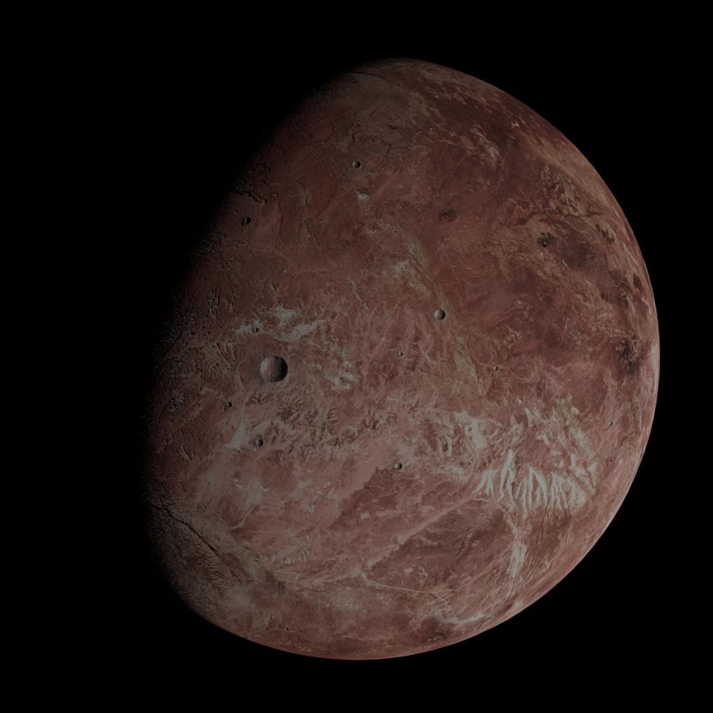
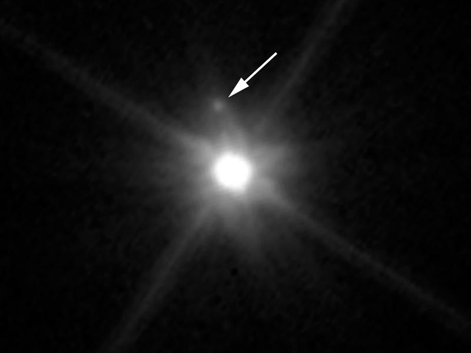
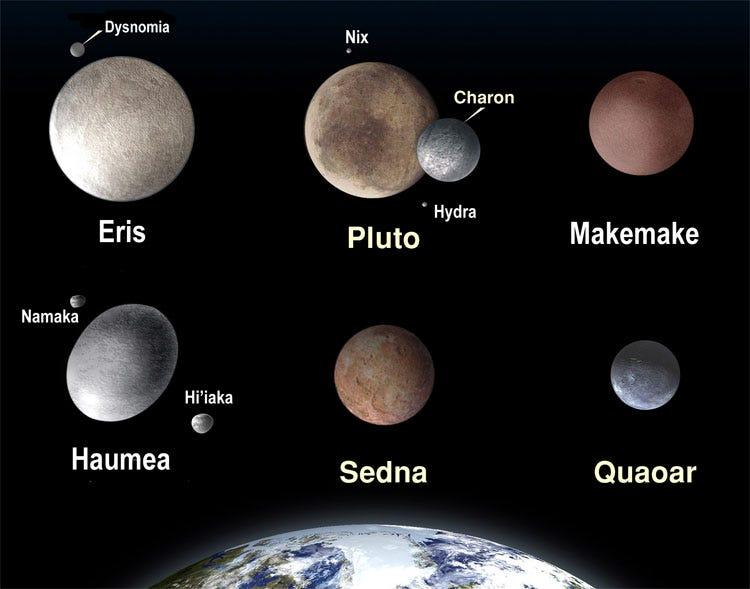
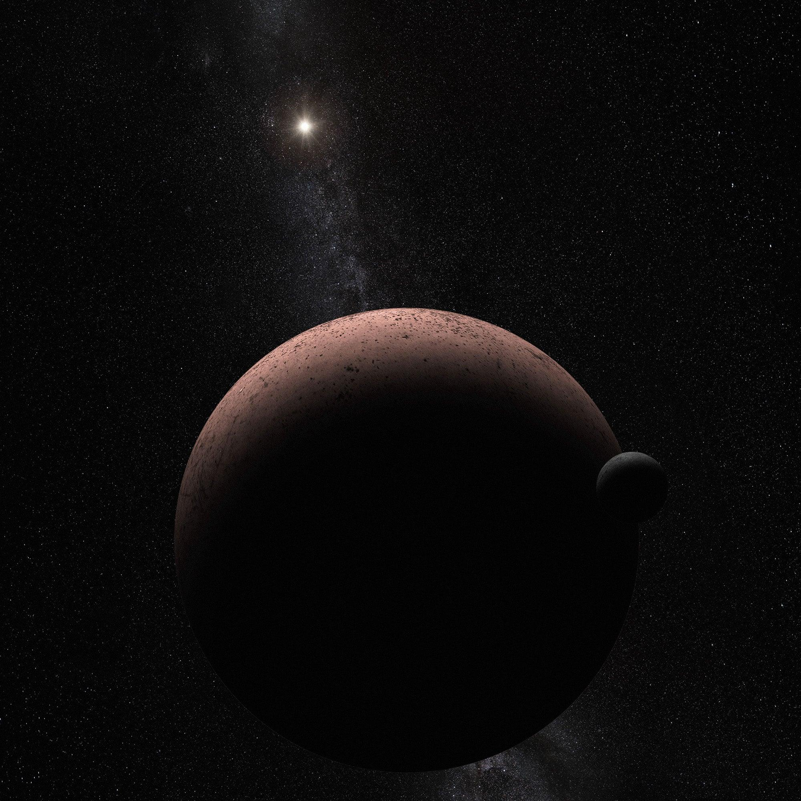

Day
One day on Makemake is about 22.5 hours.
Makemake is a dwarf planet located in the distant Kuiper Belt, a region beyond Neptune filled with icy objects.
It was discovered in 2005 and officially classified as a dwarf planet in 2008.
Makemake is one of the largest known dwarf planets, after Pluto and Eris, and is named after a creator deity from the Rapa Nui, or Easter Island, culture.
It is extremely far from the Sun, making it a cold and dim world that is still not fully understood.
Discover More ›
Makemake — a frozen dwarf planet in the Kuiper Belt.

Makemake has a frozen surface made of methane and other ices.
Makemake has a frozen surface made mostly of methane ice, ethane ice, and possibly nitrogen ice.
These ices give Makemake a reddish-brown color, similar to Pluto.
Its surface is thought to be relatively smooth, but it may also contain craters formed by impacts.
Because it is so far away, detailed images of its surface are limited, so much of what scientists know comes from observations and scientific models.
Makemake does not have a permanent atmosphere, but scientists believe it may develop a temporary atmosphere when it gets slightly closer to the Sun.
Any atmosphere would be made of gases like methane or nitrogen.
These gases would freeze and fall back to the surface as Makemake moves farther away.

Makemake may only form a temporary atmosphere during parts of its orbit.

Makemake has one known moon, often called MK2.
Makemake has one known moon, discovered in 2016.
This moon is often referred to as MK2 and is officially named S/2015 (136472) 1.
The discovery of this moon helped scientists better estimate Makemake’s size and mass.
Makemake is very far from the Sun, and its orbit is slightly tilted compared to the planets, which is common for Kuiper Belt objects.
One day on Makemake is about 22.5 hours.
One year on Makemake is about 305 Earth years.
Makemake is located in the Kuiper Belt beyond Neptune.
Its orbit is distant and slightly tilted compared to the main planets.
Dwarf planet in the Kuiper Belt
Extremely cold surface
Reddish color due to methane ice
No stable atmosphere
Has one known moon
Very long orbit around the Sun
Discovered in 2005
Makemake is unique because it represents the mysterious outer solar system, where icy worlds exist far beyond the main planets.
Its lack of a stable atmosphere and its frozen surface make it very different from Earth-like planets.
It also helps scientists understand how dwarf planets form and evolve in the Kuiper Belt.
Even though it is distant and difficult to study, Makemake plays an important role in expanding our knowledge of the solar system.
A video exploring dwarf planets in the solar system.
